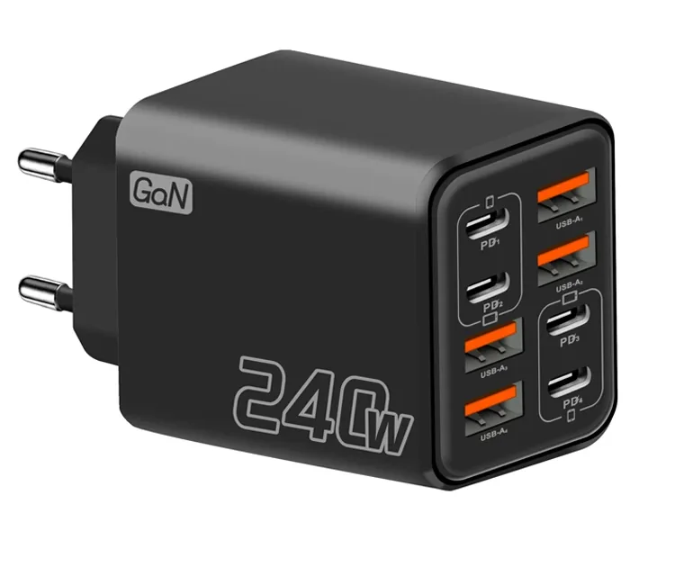
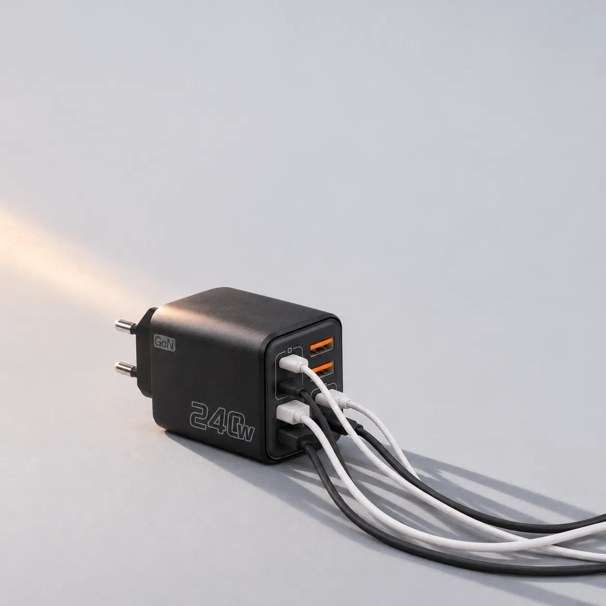
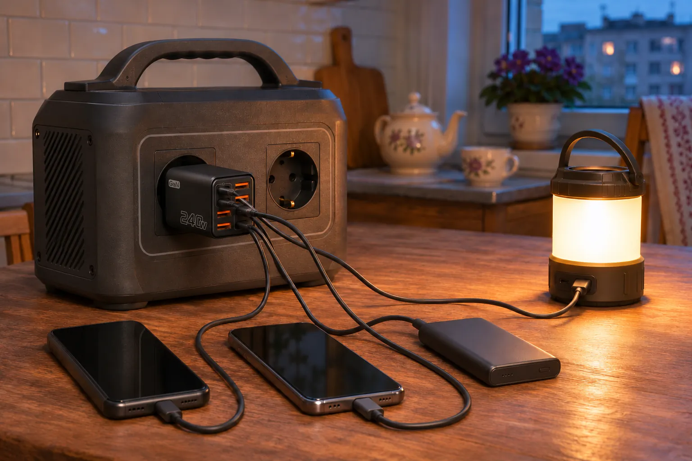
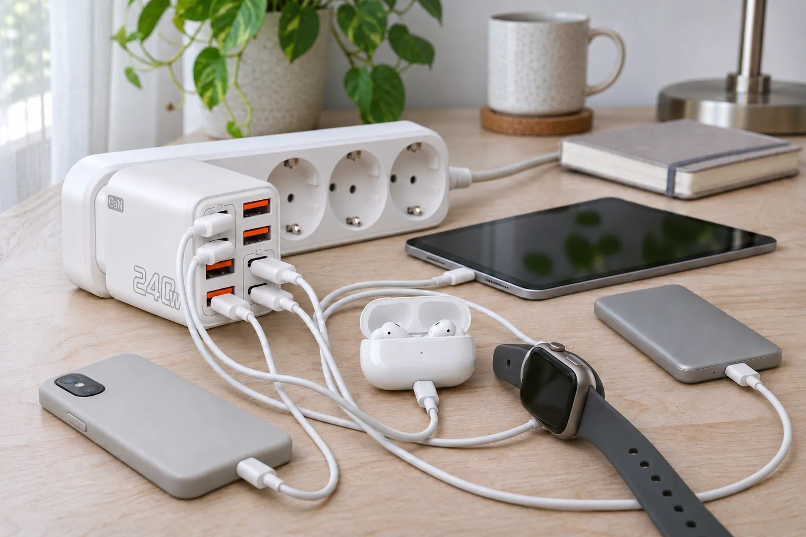
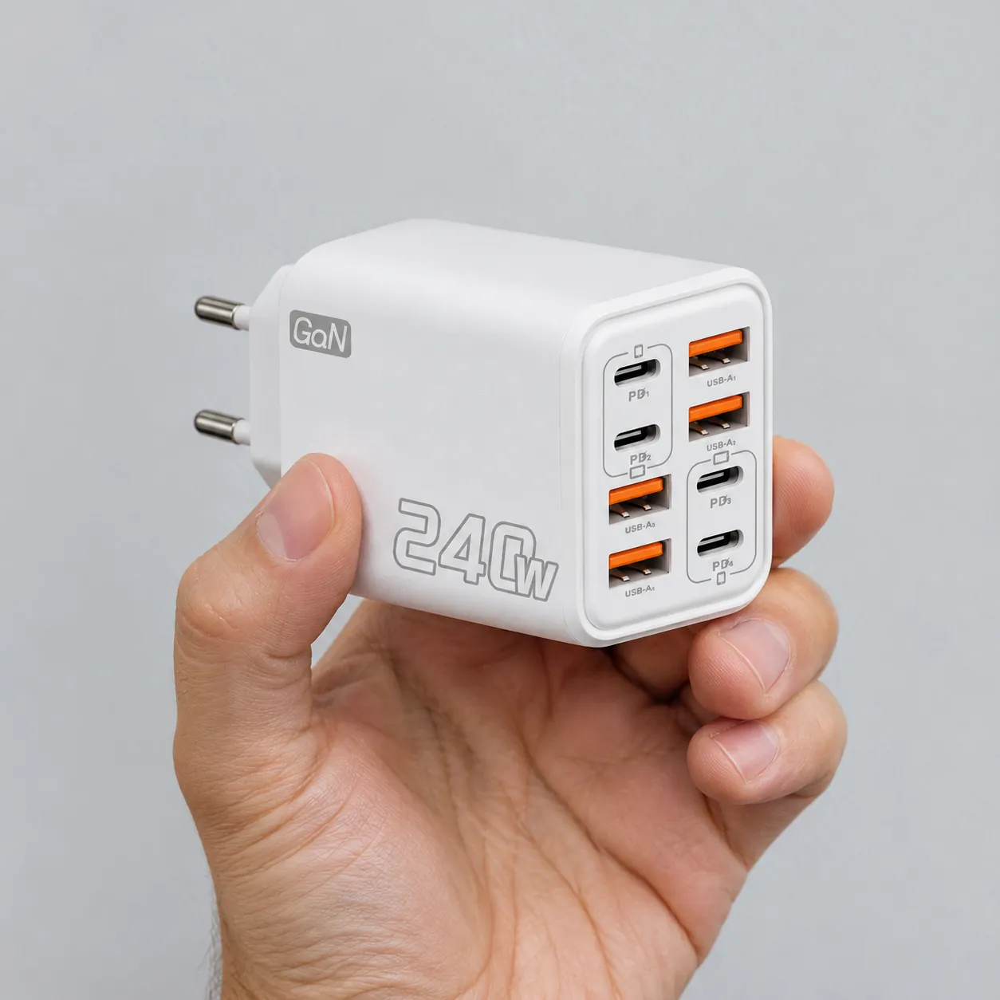
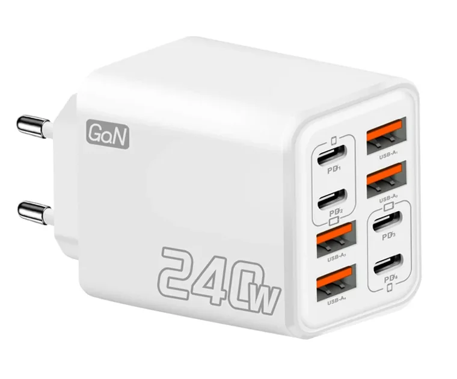

Чорний, євровилка
102 грн для нового акаунта
Купити чорнийМережевий зарядний пристрій з чотирма USB-C і чотирма USB-A. Телефони, навушники, годинник і павербанк заряджаються разом від одного блока, а решта подовжувача лишається вільною.
101 грнвітальна ціна AliExpress для нового акаунта, 1 шт.
Доставка в Україну 24,40 грн, 7-20 днів

На торці вісім гнізд у дві колонки. Порти USB-C стоять парами ліворуч угорі і праворуч унизу, між ними чотири USB-A з помаранчевими язичками. Тож підходять і нові кабелі, і старі, що лежать у шухляді.
Схема торця. Насправді він 42 × 47 мм.
iPhone 15 і новіші, Android-смартфони, iPad, навушники і годинники з кабелем USB-C, а також кабелі USB-C на Lightning для старших iPhone.
| 5 В × 4 А | 20 Вт |
| 9 В × 2,3 А | 20,7 Вт |
| 12 В × 1,7 А | 20,4 Вт |
Протокол USB Power Delivery: телефон сам домовляється з блоком про напругу.
Старі кабелі USB-A на Lightning і micro-USB, зарядки фітнес-браслетів і годинників, павербанки, ліхтарики, USB-лампи і вентилятори.
| 5 В × 3,8 А | 19 Вт |
| 9 В × 2,2 А | 19,8 Вт |
| 12 В × 1,6 А | 19,2 Вт |
Швидка зарядка Qualcomm Quick Charge, за даними продавця.
Кабелів у комплекті немає, підійдуть ваші.
240Wнадруковано на корпусі
20 Втмаксимум на один порт за шильдиком
Великий напис на боці не означає, що один телефон отримає 240 Вт. Шильдик, тобто таблиця параметрів на корпусі, обіцяє до 20 Вт на кожен порт. Сумарної потужності на ньому немає, у характеристиках лота вказано 120 Вт. Коли заряджаються кілька пристроїв, потужність ділиться між ними.
Для телефона 20 Вт це нормально: стільки видає стандартний блок Apple для iPhone.
Просто сприймайте його як зарядку на 20 Вт, ігноруйте напис 240W, і він добре впорається.
За цей час треба зарядити все, що сіло за день: два телефони, павербанк, навушники, лампу. З окремими блоками вони займають усі розетки або чекають своєї черги. Від кубика вони заряджаються разом, кожен отримує свою частку потужності.
Із зарядною станцією так само: AC-розеток у неї дві-три, а кубик займає одну і дає вісім портів.



На AliExpress продано понад 50 000 штук.
Дуже влучний вибір: прибрав з подовжувача чотири зарядки, тепер у мене одна, і ще чотири гнізда вільні. Працює. Задоволений, рекомендую.
Прийшов швидко, працює як очікувалося. Заявлених ватів не видає, але працює добре і рятує від купи блоків у розетці: з одним у мене все. Ціна і якість цілком адекватні.
Мені дуже сподобався. Не гріється. Швидким я б його не назвав, зате можу підключити кілька телефонів та інші речі. Тому він вартий кожної копійки.
Дуже корисний і практичний. Перевірив порти USB-A, працюють ідеально, потім USB-C. Хороший матеріал, зручний розмір, добре запакований.
Відгуки з AliExpress у нашому перекладі, трохи скорочені.

102 грн для нового акаунта
Купити чорний
101 грн для нового акаунта
Купити білийЦіни і терміни перевірено 7 листопада 2026 року. Продавець: TOP BRANDS Store.
Ні, у коробці тільки сам зарядний пристрій. Підійдуть ваші кабелі з роз'ємом USB-C або USB-A.
За шильдиком USB-C видає до 20 Вт через Power Delivery, як стандартний блок Apple на 20 Вт. Реальна швидкість залежить від кабелю, моделі телефона і того, скільки ще пристроїв підключено.
Здебільшого ні. Ноутбукам потрібно 20 В і 45-100 Вт, а цей блок дає максимум 12 В і близько 20 Вт з порту. Для ноутбука потрібен окремий блок.
Під навантаженням тепліє, як будь-який мережевий блок. Покупці пишуть, що сильно не гріється. Не накривайте його і не залишайте в закритій шухляді, коли він працює.
Так, вхід розрахований на 100-240 В змінного струму, 50/60 Гц. Вставляйте в AC-розетку станції, як звичайну зарядку.
Галій-нітрид, матеріал транзисторів, завдяки якому мережеві блоки роблять меншими. Що всередині саме GaN, вказує продавець, перевірити це без розбирання не можна.